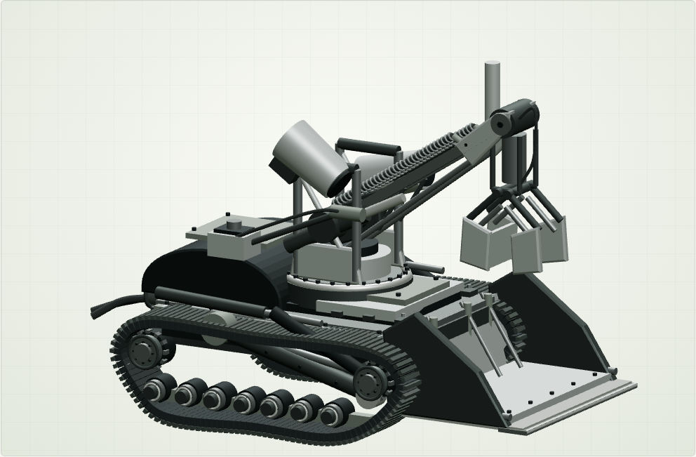

Документ. Состав комплекса, назначение грейфера и погрузчика; для модернизации — сменный схват и два места установки молотка.
ЧЕРНОБЫЛЬСКАЯ АЭС ·
Моботы 1986–1987
Две самостоятельные исследовательские модели
Реконструкция по оригинальным фотографиям и материалам разработчиков. Точные размеры неизвестны.
МАСШТАБ УСЛОВНЫЙ
Подготовка модели…
Вращайте мышью или пальцем.
Масштаб: колесо / жест двумя пальцами.
Масштаб: колесо / жест двумя пальцами.
Источник, а не иллюстрация
Ракурс и поза подобраны качественно. Автоматическая фотограмметрия и метрическая калибровка не выполнены. Дата публикации снимка не равна дате съёмки.
Инструмент ручной фотосверки ↗Паспорт достоверности
Подтверждение наличия узла не подтверждает его точные размеры и внутреннее устройство.
Фотография. Видимый внешний контур, открытые рамы, семь круговых элементов нижнего ряда, форма кожуха и рабочих органов.
Гипотеза. Все размеры сцены, сечения, скрытые связи, оси, ходы приводов и точная форма креплений. Симметрия невидимого борта также принята условно.
Заводские сборочные чертежи и калиброванные размеры не получены. Модели пригодны для обсуждения устройства и показа исследования; исторически точными CAD-моделями они не являются.
Показ без графического ускорения
Проверенные кадры реального рендеринга. Статические страницы работают без WebGL и без JavaScript.


1986 → 1987
Две машины, два инженерных решения
| Узел | Мобот-Ч-ХВ · 1986 | Мобот-Ч-ХВ-2 · 1987 |
|---|---|---|
| Рабочий орган | Грейфер для фрагментов и сыпучих материалов (A); ковшеобразные челюсти на фото (B). | Сменный двупалый схват (A). Молоток вместо схвата или на погрузчике (A); фото установки на стреле (B). |
| Манипулятор | Открытые решётчатые боковины стрелы видны на рис. 6 и 9 (B). | Составные продольные элементы, наружные спиральные элементы и пластинчатая головка видны на фото (B). Назначение каждого скрытого механизма не установлено. |
| Компоновка и перемещения | Манипулятор, погрузчик и кабельная связь документированы (A). | Увеличены грузоподъёмность и зона обслуживания; изменены кабелеукладчик и точка вывода кабеля; введена акустическая связь (A). |
| Доставка | Транспортно-посадочный модуль (A). | Добавлено полуавтоматическое стыковочное устройство (A). Точную геометрию не заявляем. |
| Ходовая | Семь нижних круговых элементов на идентифицированном фото (B). | Семь нижних круговых элементов на фото перед отправкой (B). Это не доказательство идентичности подвесок двух машин. |
Источники: СКТБ ПР: история применения, описание модернизации, «Роботы в Чернобыле», 2019, с. 74–76. Численные характеристики без подтверждённого масштаба здесь не приводятся.
Контекст применения
Реконструкция работ на крыше
Существующий интерактивный стенд, сценарии и VR доступны отдельно. Его прежняя модель не заменяет две исследовательские версии выше. Сценарные детали требуют отдельной исторической проверки.
18 ноября 2026 · 3–5 минут
Сценарий демонстрации
- 0:00–0:30. Две машины, созданные для работы в опасной среде. Здесь показаны две самостоятельные исследовательские реконструкции.
- 0:30–1:30. Модель 1986: ходовая, решётчатая стрела и грейфер. Переключить ракурс, показать две позы и рядом открыть оригинальные фотографии.
- 1:30–2:40. Модель 1987: сменный схват, молоток, погрузчик. Продемонстрировать смену инструмента и подъём ковша.
- 2:40–3:30. Объяснить классы A/B/C: функции по документам, внешний вид по фото, размеры и скрытые механизмы пока приблизительны.
- 3:30–4:30. Показать независимые ракурсы и дальнейший путь: обмеры, подтверждение осей, проверка кинематики. При необходимости открыть стенд работы на крыше.